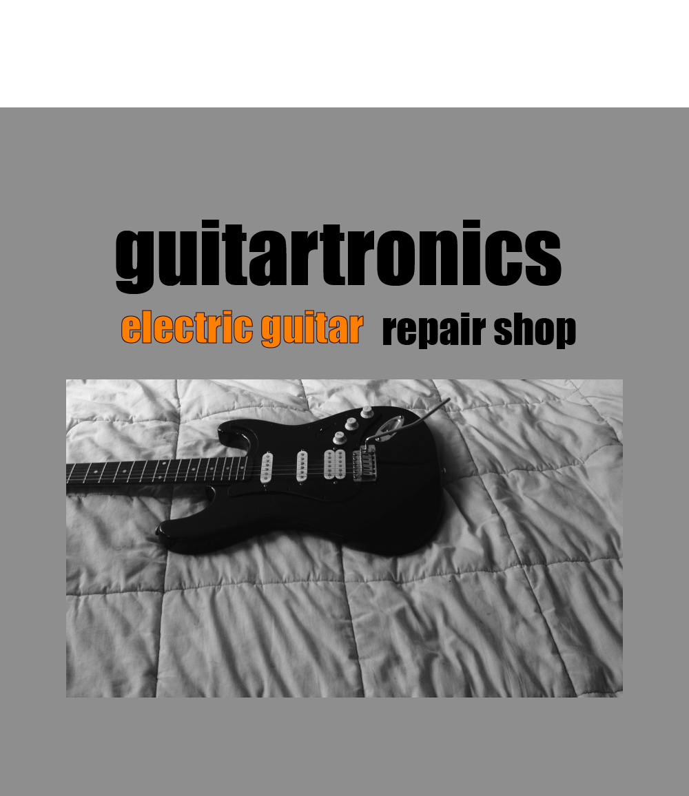

calidad & precisión

servicios
luthería
para hobbystas y expertos
diy electric guitar circuits
reparación de fretboard y nut
calibraciones a piacere
reentrastados
diseño personalizado de pickguard
recableado de cápsulas
construcción de preamps